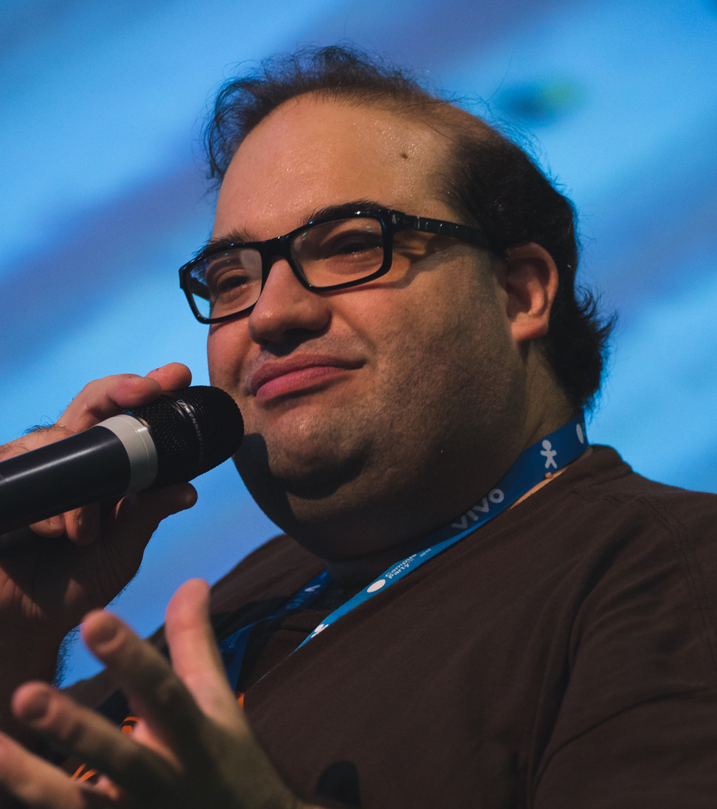
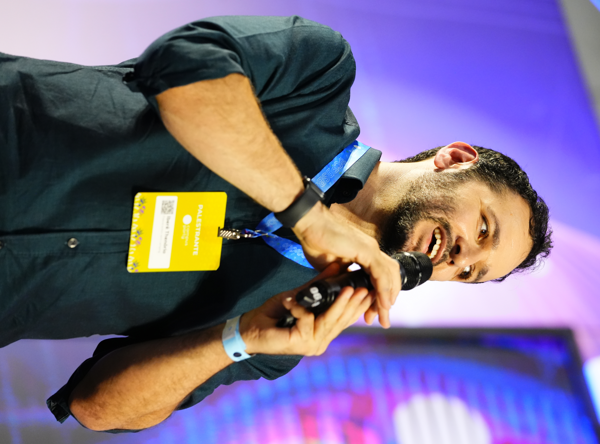

Sergio Sacanni
Iberê ThenórioBem vindo ao Tech Summit 2026, um evento de tecnologia com o objetivo de divulgar novas invenções em desenvolvimento e apresentar palestras de pessoas conhecidas no ramo, para incentivar e ajudar novos desenvolvedores.
Aqui você vai ter a experiência de presenciar o começo de diverssas novas tecnologias que vão participar do seu futuro.
| PROGRAMAÇÃO OFICIAL | ||
|---|---|---|
| Horário | Atividade | Local |
| 13:00 | Palestra de abertura | Entrada |
| 14:00 | Palestra de uso da IA (como usar para te ajudar de forma ética) | Estande da OpenAI |
| 15:30 | Exibição da nova geração de processadores | Estande a Intel e Microsoft |
| 17:00 | Apresentação das tecnologias dos alunos da FATEC | Palco central |
| 18:30 | Palestra de encerramento | Entrada |

Sergio Sacanni
Iberê Thenório